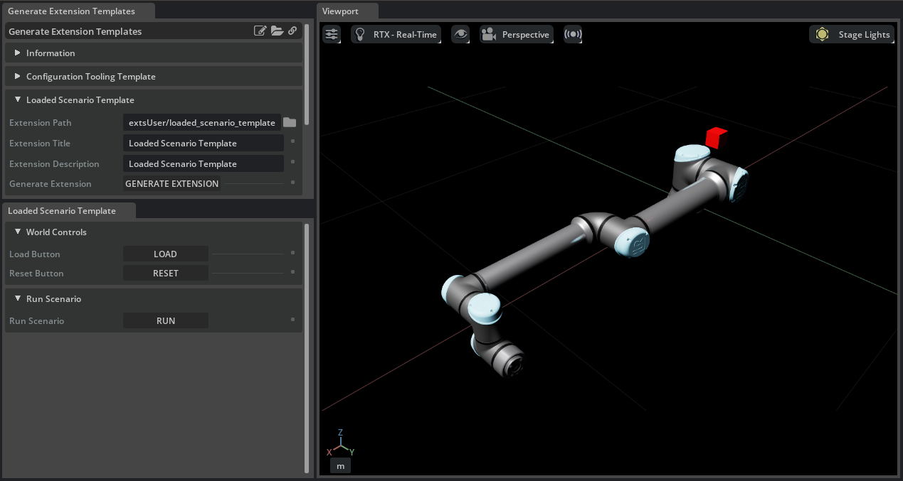
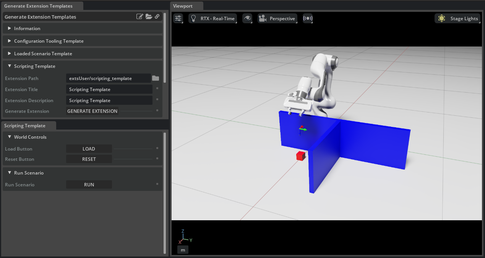
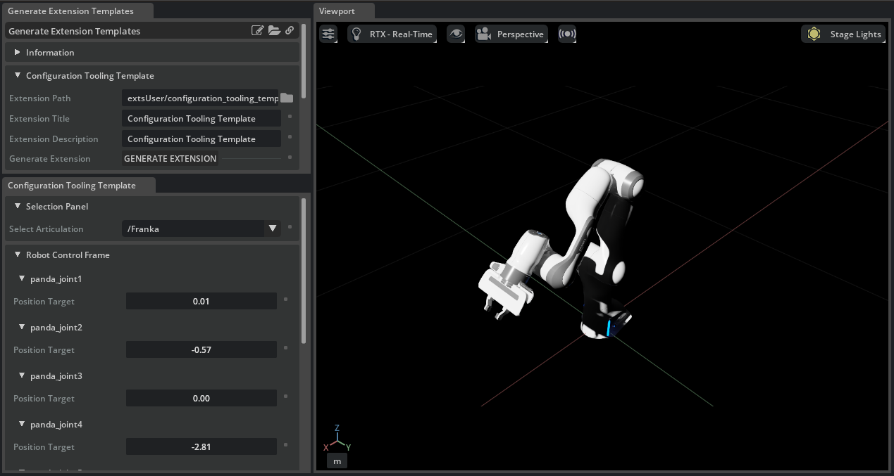
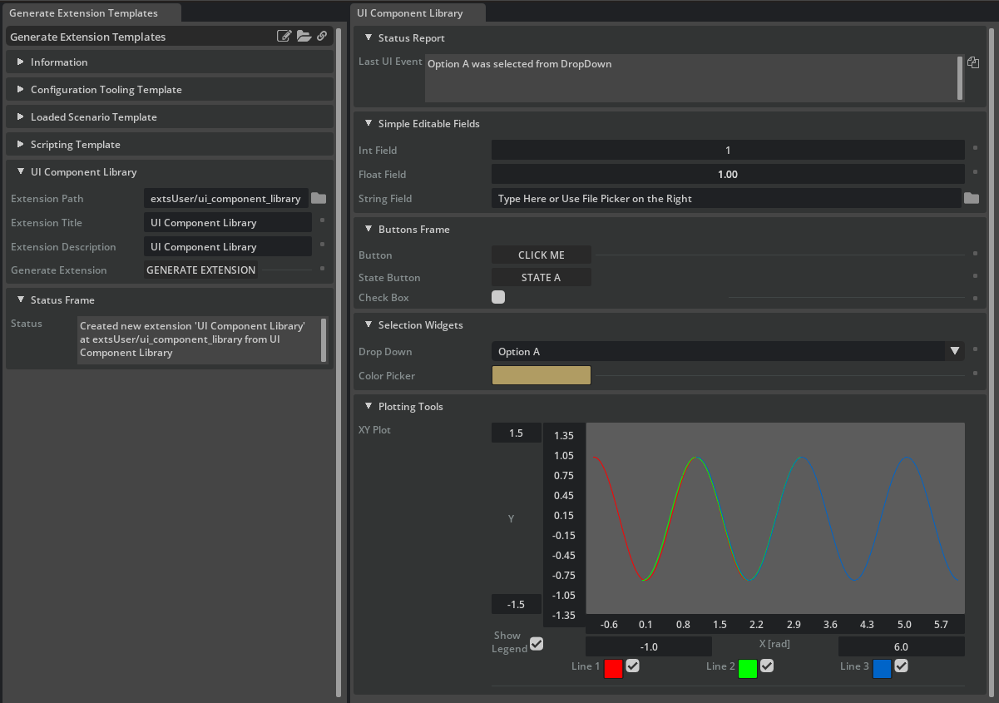

Extension Template Generator 说明#
自版本 6.0.0 起弃用： 基于 UI 的 Extension Template Generator (isaacsim.examples.extension) 已弃用。
请改用 CLI Extension Templates。
通用概念#
Extension Template Generator 提供的每个模板都具有共同的底层结构，并在其之上构建了一层轻量级的实现。
在每个模板的根目录中，都有一个名为 ./scripts 的文件夹，其中存储了支持该扩展的所有 Python 代码。在
./scripts 内部，包含三个通用的 Python 文件：
- global_variables.py
该脚本用于存储用户在 Extension Template Generator 中创建扩展时指定的全局变量， 例如 Title 和 Description。
- extension.py
该类包含使用户扩展显示在 Toolbar 上所需的标准样板代码。此 类旨在无需修改即可满足大多数使用场景。 在 extension.py 中，创建了一些有用的标准回调函数，用户可以在 ui_builder.py 中对其进行完善。
- ui_builder.py
此文件是用户进入模板的主要入口点。在此文件中，用户可以查看已为其设置好的实用回调函数，还可以创建与用户自定义回调函数关联的 UI 元素。此文件的文档最为详尽，用户在进行重大修改之前应仔细阅读。
典型用户只需修改 ./scripts/ui_builder.py 即可使其扩展按预期工作。在 ./scripts/ui_builder.py 中，用户将找到一组标准回调函数，这些函数将用户与模拟器连接起来：
on_menu_callback()：打开扩展时调用
on_timeline_event()：当时间轴停止、暂停或播放时调用
on_physics_step()：在每个物理步骤中调用。物理步骤仅在时间轴播放时发生。
on_stage_event()：打开或关闭舞台时调用
cleanup()：当扩展正在关闭且应清理物理订阅等资源时调用
build_ui()：用户函数，用于创建所需的 UI。
在提供的扩展模板中，大部分实现位于 build_ui() 函数中。扩展模板利用了一组围绕 omni.ui 元素的包装类，使用户能够轻松创建和管理各种 UI 元素。在本教程中，这些被称为 UIElementWrappers。每个包装类旨在为用户提供与 UI 元素交互的最符合直觉的方式。例如，用户可以创建一个 FloatField UI 元素；每当用户在 UI 中修改 FloatField 时，都会调用用户回调函数，并传入新的 float 值。
每个扩展模板在 build_ui() 中构建 UI，并包含一组控制回调函数。这些回调函数包含了使 UI 流畅运行所需的所有逻辑，并便于用户为自定义应用程序连接代码。
已加载场景模板#
已加载场景模板为用户提供一个包含三个按钮的简单 UI：Load、Reset 和 Run。旨在为用户提供尽可能清晰的路径，使其能够直接编写代码来影响 USD 舞台，而无需深入了解底层模拟器的内部工作原理。用户只需了解以下简单概念。
重要概念#
在 Omniverse Kit 应用程序中，左侧工具栏上有一个模拟时间轴，可以直接停止、暂停和播放。物理模拟仅在时间轴处于活动状态（未停止）时运行。因此，当时间轴停止时，用户无法控制机器人 Articulation，并且当时间轴从停止状态切换到播放状态时，需要对某些资产（如 Articulation）执行初始化操作。已加载场景模板的目的是让用户更容易与模拟器交互，而无需处理初始化等事务。
在 isaacsim.core.api.world 中，有一个单例类 World，旨在通过简单清晰的用户交互来设置并妥善管理仿真。在此模板中，World 由 Load 和 Reset 按钮管理，从而在调用用户的回调函数时，为用户提供关于仿真器状态的明确保证。用户与 World 的交互被最小化，使得他们与 World 的唯一交互形式为 world.scene.add(user_object)，其中 user_object 是来自 isaacsim.core.api 的任意对象。
为确保功能正常，所有对时间轴的操作都应通过 Load 和 Reset 按钮完成。也就是说，用户可能会通过在此 UI 之外按左侧工具栏上的 Stop 和 Play 按钮来引发问题。因此，该模板直接处理用户在模板 UI 之外干扰时间轴的情况，并在必要时重置 UI，以维持对用户回调函数的假设。
实现细节#
Load 按钮有两个回调函数：
- def setup_scene_fn():
按下 Load 按钮时，会创建
World的新实例，然后调用此函数。 用户现在应将资源加载到舞台上，并使用world.scene.add()将其添加到World中。
- def setup_post_load_fn():
用户可以假定其资源已通过 setup_scene_fn 回调加载完毕，其对象已正确初始化，并且时间轴已暂停在第 0 个时间步。
Reset 按钮有两个回调函数：
- pre_reset_fn():
此函数在
World重置之前调用，因此无法保证模拟器的状态。
- post_reset_fn():
用户可以假定其对象已正确初始化，并且时间轴已暂停在时间步 0。
用户还可以假定已添加到
World中的对象已移回其默认位置。 即，立方体 prim 将移回其在 setup_scene_fn() 中创建时所处的位置。
Run 按钮未连接到 World。它是一个 StateButton，这意味着它将在两个状态之间切换：Run 和 Stop。
StateButton 可以具有三个回调函数：
- on_a_click():
当
StateButton显示其 a_text 时调用的函数
- on_b_click():
当
StateButton显示其 b_text 时调用的函数
- physics_callback_fn():
如果指定了此函数，
StateButton将在状态按钮处于 B 状态期间的每个物理步骤调用此函数， 并且当状态按钮处于 A 状态时，它将取消物理订阅。
注意
您可以在 UIBuilder 类中查看这些函数是如何被调用的（isaacsim.examples.extension 扩展中的 template_source_files/loaded_scenario_workflow/ui_builder.py 文件）。
要尝试此功能，请打开 Template Generator（Utilities > Generate Extension Templates 菜单），并在 Loaded Scenario Template 部分下创建一个新扩展。 然后，启用该扩展（Window > Extensions 菜单，搜索给定的扩展名称），并单击具有相同名称的工具栏条目。


Scripting 模板#
Scripting Template 是 Loaded Scenario Template 的自然扩展，它演示了如何在 NVIDIA Isaac Sim 中基于 UI 的扩展内实现更高级的框架，以编程方式实现类似脚本的行为。此模板使用相同的机制来加载和重置机器人位置，但将 Run 按钮实现为脚本。
使用此模板中演示的模式，用户可以通过实现长运行函数来编程类似脚本的行为，这些函数在每个物理步骤中检查状态，以发送新命令或确定是否应该返回。Scripting Template 包含函数 goto_position()、open_gripper_franka() 和 close_gripper_franka() 的实现。这些函数按顺序使用，以脚本化下面所示的简单拾取和放置任务。
实现细节#
UI 的实现细节与 Loaded Scenario Template 一致，因此本节重点介绍类似脚本行为的实现。可以使用 Python 的 yield/generator 框架编写在每个帧中检查状态的长运行函数。在文件 scenario.py 中实现了函数 my_script()，该函数包含 goto_position()、open_gripper_franka() 和 close_gripper_franka() 函数调用的序列。my_script() 函数使用了 yield 和 yield from 语句。这允许使用 self._script_generator = self.my_script() 将 my_script() 包装在生成器中。然后，在每个物理步骤中，调用 next(self._script_generator) 来步进生成器并执行代码，直到遇到下一个 yield 语句（在 my_script() 或嵌套函数中）。
以函数 open_gripper_franka() 为例：
def open_gripper_franka(self, articulation):
open_gripper_action = ArticulationAction(np.array([0.04, 0.04]), joint_indices=np.array([7, 8]))
articulation.apply_action(open_gripper_action)
# Check in once a frame until the gripper has been successfully opened.
while not np.allclose(articulation.get_joint_positions()[7:], np.array([0.04, 0.04]), atol=0.001):
yield ()
return True
my_script() 调用 yield from open_gripper_franka()。函数 open_gripper_franka() 向 Franka Articulation 发送一条指令，要求夹爪打开，随后在每个后续的物理仿真步骤中，检查夹爪是否已到达目标位置。一旦夹爪到达目标位置，该函数便停止调用 yield，转而调用 return True 以指示操作成功。控制流返回至 my_script()，并调用序列中的下一个函数。
要尝试此功能，请打开模板生成器（Utilities > Generate Extension Templates 菜单），并在 Scripting Template 部分下创建一个新扩展。 然后，启用该扩展（Window > Extensions 菜单，搜索指定的扩展名称），并点击工具栏中同名的条目。


Configuration Tooling 模板#
Configuration Tooling Template 提供了一个简单的模板，可作为构建资产配置工具的坚实基础。
所提供的实现创建一个下拉菜单，用于查找舞台上的任意 Articulation，并动态创建一个 UI 框架，用户可通过该框架控制所选 Articulation 中的每个关节。
与 Loaded Scenario Template 不同，此扩展假定对时间轴或舞台没有控制权。相反，它允许用户选择舞台上的任意内容，并开始读取和写入其状态。构建资产配置工具是一种更高级的用例，因此需要对 Simulation 时间轴有更好的内部模型。例如，由于 Articulation 仅在时间轴播放时可访问，因此提供的模板仅允许用户在时间轴播放时尝试修改其选定的 Articulation。
实现细节#
DropDown 由一个函数填充，该函数在 USD 舞台中搜索所有指定类型的对象。此功能作为便捷函数直接提供在 DropDown UI 包装器中，但该函数所使用的版本保留在模板底部，以便用户进行进一步自定义。
每当从 DropDown 中选择新项目时，都会使用构建器函数重建 Robot Control Frame。这是创建稳健动态 UI 工具的强大范式。在此模板中，该框架可以向用户报告未选择机器人，或者如果一切正常，则列出所选机器人中的每个关节。
要试用此模板，请打开 Template Generator（Utilities > Generate Extension Templates 菜单），并在 Configuration Tooling Template 部分下创建一个新扩展。然后，启用该扩展（Window > Extensions 菜单，搜索给定的扩展名称），并点击具有相同名称的工具栏条目。最后，在一个新舞台中（File > New 菜单），添加 Franka 机器人（Create > Robots > Franka Emika Panda Arm 菜单）并进行操作。


UI 组件库#
UI Component Library 模板演示了已创建的每个 UIElementWrapper 的用法。在设置自定义 UI 工具时，应将其作为参考。最重要的是，此模板展示了可以附加到每个 UIElementWrapper 的每个回调函数所需的特定参数类型和返回值。此模板省略了 Load 和 Reset 按钮，因为这些是特殊情况的按钮，已在 Loaded Scenario Template 中演示。此模板中显示的任何 UI 组件都不会直接影响仿真；它们仅调用用户回调函数。
UI Component Library 模板中的组件封装了 omni.ui 中元素的一个子集，并且每个封装器都对 UI 组件的放置和标签方式有特定看法，以便与其他封装组件并排显示时外观良好。高级用户可以在封装组件旁边添加 omni.ui 组件而不会出现问题。
要查看模板演示的 UI 元素，请打开 Template Generator（Utilities > Generate Extension Templates 菜单），并在 UI Component Library 部分下创建一个新扩展。然后，启用该扩展（Window > Extensions 菜单，搜索给定的扩展名称），并点击具有相同名称的工具栏条目。新打开的窗口中演示了完整的 UI 元素集。


总结#
本教程介绍了 NVIDIA Isaac Sim Extension Template Generator 中提供的模板。每个模板都具有共同的底层结构，并包含一层薄薄的实现代码，以展示不同的用例。用户可以参考其中一个或多个模板，从而开始在 NVIDIA Isaac Sim 中构建高度定制的基于 UI 的扩展，而无需深入了解模拟器的内部机制。
深入学习#
除了这些模板之外，用户还应参考 UIElementWrapper 对象的 API 文档。